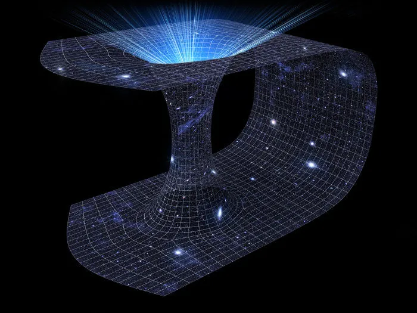
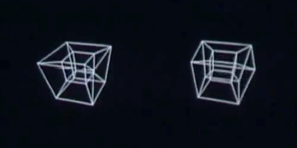

|  |
O buraco de minhoca seria um "atalho" no espaço-tempo, que a décadas vem dividindo opniões entre a comunidade científica. |
|
Sim, seria possivel, porém não poderia, (ao menos não nas próximas eras), ser como vimos em séries como rick e morty já que a pressão de uma viagem desse nivel esmagaria todos os seus ossos (isso na melhor das hipóteses), fora que seria extremamente desconfortavel ser espaguetificado e compressado milhares de vezes durante a viagem. A distorção do campo gravitacional de um burraco de minhoca é de um tamanho absurdo, e com razão, já que essas "falhas" do espaço-tempo tem em hipótese teria seu início em um buraco negro, e terminaria em um "buraco branco" que segundo o Astrofísico Andrew Hamilton mudaria o fluxo espacial, ocasionando na chegada em um tempo diferente do tempo inicial, assim podendo "viajar no tempo". | |||
|
Com base nisso, e com a teoria geral da relatividade proposta por Albert Enstein, que diz (de modo resumido) que quanto mais rápido o corpo está,
|
| ||
Mas e oque a quarta dimensão tem haver com isso?... |
|||
| É preciso lembrar que a quarta dimensão, ao contrário do que voce está pensando, não é um universo paralelo, e sim uma dimensão espacial, nós vivemos em um plano tridimecional, isto é, dividido em três dimensões, a física clássica descreve o espaço usando três dimensões: grosseiramente falando, qualquer movimento pode ser decomposto em três componentes: cima/baixo, direita/esquerda e frente/trás. Pode não parecer, mas adicionar mais uma dimensão mudaria tudo. | |||
| Basicamente, não seria possivel viajar para uma quarta dimensão, porém, seria (numa hipótese absurda) possivel ir para uma dimensão aonde tudo é em quatro dimensões, e lá seriamos como a sombra deles, assim como a nossasombra é 2d, a deles seriam em 3 dimensões, fazendo com que fossemos como um personagem dos looney tunes em sua visão. |  Retirado de amino |
||